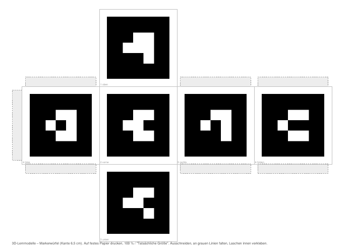

Modelle zum Anfassen: Markerwürfel in die Hand, iPad drauf halten – das Modell erscheint auf dem Würfel.
&aufl=niedrig anhängen.viewer.html?m=villa&r=atrium.?fach=Biologie oder ?jahrgang=6.Tipp: Für die Klasse auf dünnen Karton drucken oder mit matter Folie laminieren. Ein Würfel passt für alle Modelle.

Die Tafelansicht zeigt den Bastelwürfel oder ein Modell zum Drehen mit Finger oder Maus – ideal fürs ActiveBoard, um eine Perspektive vorzugeben („Haltet den Würfel so!“) oder ein Modell ohne Würfel zu besprechen. Schnellknöpfe stellen Vorne, Oben, Schräg usw. ein.
In der Übersicht öffnet „Tafel“ direkt das jeweilige Modell.
KGS Schwarmstedt · 3D-Lernmodelle